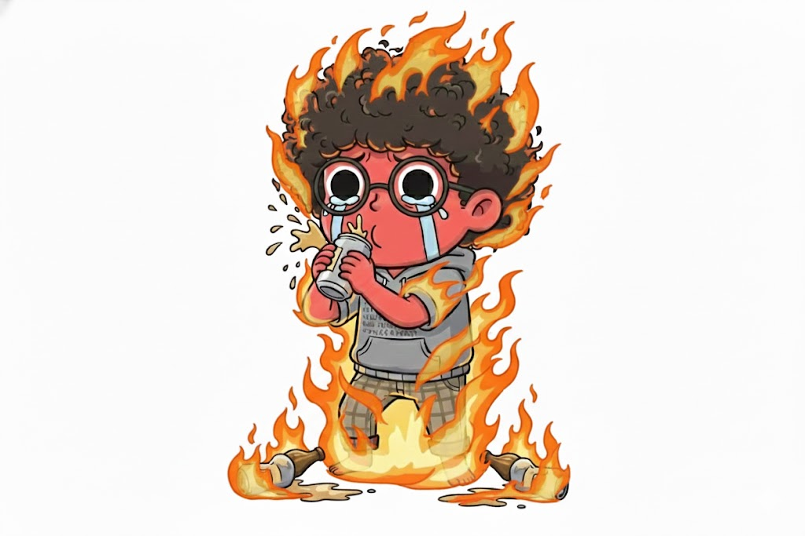

あなたの酒タイプは…
爆発インキャ (LODY)

「酔うと愚痴が止まらない」 場を主導権を握るが、お酒が弱いので静かに愚痴を吐き続け、周りを重くする内向的なボス。
基本的特徴
基本的特徴：抑圧された情熱のディレクター
普段は控えめで聞き役に回ることが多いですが、お酒が入ることで「心のダム」が決壊します。自分のこだわりや、現状への危機感、秘めたる野心が、少しダウナーで重厚な言葉となって溢れ出します。その熱量は凄まじく、一度スイッチが入ると誰にも止められない独自の世界観を展開します。
飲み会での特徴
飲み会での特徴：一対一のロングインタビュー
ターゲットを一人に絞り、逃げ場のない状況で長時間の「深掘り」を開始します。内容は深いのですが、酒が弱いため徐々に論理が破綻し、最終的には「俺なんて、結局何もできてないんすよ…」という自己批判に陥ることも。翌朝、送った覚えのない熱い長文メッセージを読み返し、布団の中で悶絶するのがお決まりのパターンです。
長所と魅力
長所と魅力：嘘のない真実の言葉
打算や忖度のない、剥き出しの本音で語り合うことができます。あなたと一晩飲み明かした相手とは、戦友のような深い信頼関係が築かれることが多いです。その純粋さは、複雑な人間関係や利害が絡む社会人生活において、一筋の光のような価値を持ちます。
成長のヒント
ポジティブ変換力
話の着地点を「でも、次こそ頑張ろう」という前向きな結論に設定する努力をしましょう。出口のない議論は、時に自分も周囲も疲れさせてしまいます。